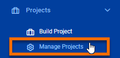
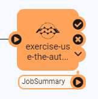
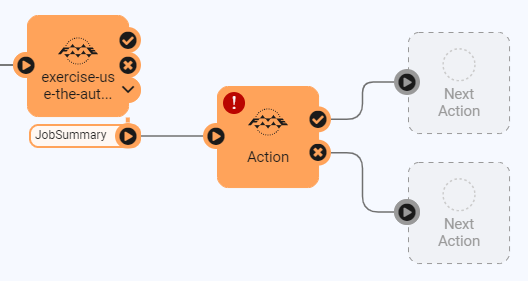
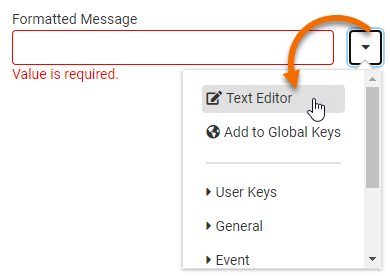
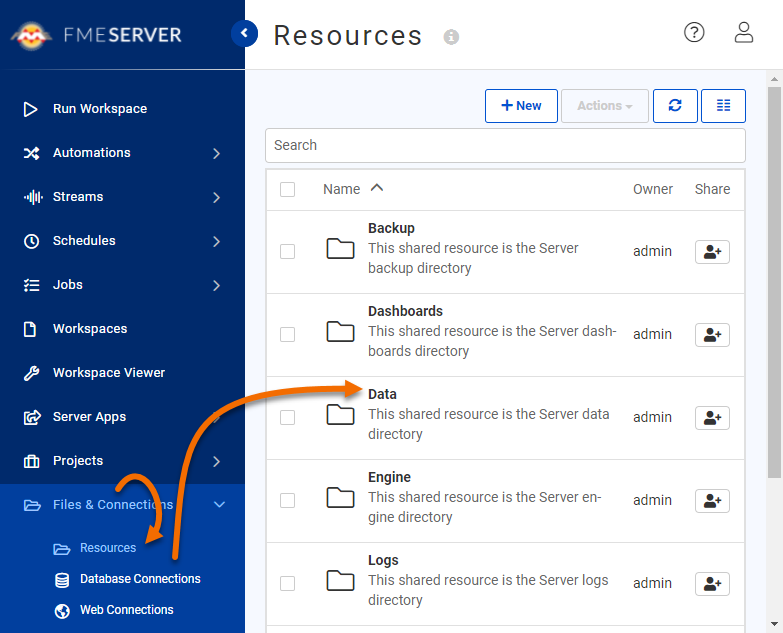
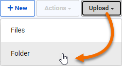

Learning Objectives
After completing this unit, you’ll be able to:
- Add an Automations writer to a workspace.
- Add and configure a Log a Message Action.
- Trigger and view the results of a Log A Message Action.
Resources
Introduction
You have recently created an Automation in FME Server that processes building footprint updates with both the Directory Watch and Email Triggers. The Automation monitors a Shared Resource Data folder on FME Server for new building footprint shapefiles, then adds the updates to a SpatiaLite database automatically. Now your supervisor is wondering if they can receive a notification whenever the corporate database is updated.
You know it is possible to configure the existing Automation in FME Server to satisfy this requirement. You also realize that you can use an Automations writer in the workspace to include additional information about the updates made to the corporate database in the notification.
1) Open Workspace in Workbench
Open the starting workspace template in FME Workbench (2021.1 or later).
You are going to update this workspace to generate a summary of the number of records that were updated from the incoming Shapefile. First, you need to create a single feature from the updates. This step is common in FME when you want to log a summary message; you just want to log one per update, not one for every feature in that update.
Add an Aggregator transformer and connect it in parallel to the Shapefile reader feature type like this:

Open the Aggregator parameters dialog and set the Count Attribute to be named NumberOfUpdates.
3) Add Automations Writer
Go to Writers > Add Writer and select the FME Server Automations format. Set the Feature Type Definition to Automatic... and click OK to add the writer to the canvas.
When prompted, set the Feature Type Name to JobSummary and click OK.
Connect the Automations writer feature type to the output port of the Aggregator transformer.
Each Automation writer feature type will appear as a new output port on your Run a Workspace Action in your Automation.
4) Clean up Automations Writer Attributes
After connecting the Automations writer feature type, you'll notice that all the attributes from the Shapefile data are included on the writer. We don't need all that information within the Automation. Double-click JobSummary to open its parameter dialog, then go to User Attributes and select Manual under Attribute Definition.
Remove all the attributes except for the one we created earlier, NumberOfUpdates. Set the Type for NumberOfUpdates to int, as this is a numeric value.

Click OK to apply that change. At this stage, there should be two attributes on the JobSummary Feature Type: NumberOfUpdates and fme_feature_type.

5) Save and Publish Workspace
Save the workspace.
Select File > Publish it to FME Server.
Choose your FME Server Connection to use. Click Next.
Use the Training Repository (click New... and create it if it doesn't exist). Check Upload data files. Click Next.
Ensure only the Job Submitter service is checked. Click Publish.
6) Import FME Server Project
Need to update Server project for https://s3.amazonaws.com/gitbook/Server-Authoring-2019/ServerAuthoring4RealTime/Exercise3.html
We need to import the Automation you've already created that checks for building updates.
Download the project here.
Open the FME Server web interface and navigate to the Projects > Manage Projects page.

Click the Import button, ensure Import From is set to Upload, then click Upload File, and select the project you just downloaded. Once you've selected it, click Import. A new Automation will be uploaded to your Server.
6) Update Workspace Action
Navigate to Automations > Manage Automations. Click the new Incoming Building Footprints Automation to edit it.
You can see that this Automation starts with either a Directory Watch Trigger with a Filter or an incoming Email (SMTP) Trigger. On success, both streams run the RealTime-Ex2-Complete.fmw workspace. We need to update this Action to use our new workspace.
Click on the Workspace Action in the Automation to open its parameters. Change the Workspace parameter to your recently published workspace. Set the SpatialLite Database path to $(FME_SHAREDRESOURCE_DATA)/Output/building_footprints.sl3 (the existing destination SpatialLite database we just added using the Server Project). Click Apply.
A new output port named JobSummary should appear in the Automation, created by the Automation Writer we just added to the workspace:

7) Add External Action
The final step in the Automation is to add an email service External Action through which a response will be sent.
Select the plus icon in the bottom left and drag an Action (orange) to the canvas. Connect this to the JobSummary output port of the Run Workspace node, which will now also act as a Trigger.

Click the FME logo on Action to open its parameters. Choose Log a message for the Action. Enter the following for the Formatted Message:
The Building Footprints database has been updated! {route.JobSummary.NumberOfUpdates} records were updated.
If you prefer, you can enter this manually using the Text Editor. You can access it by clicking the drop-down arrow next to Formatted Message and clicking Text Editor:

Similar to the Text Editor in FME Workbench, you can construct values using the tree of keys on the left. Double-click to insert one.

After entering in your Formatted Message, click Apply.
Save and start your Automation.
8) Test Automation
We can test this Automation by uploading this ZIP file of the Shapefile datasets to FME Server's Shared Resources Data folder. The Automation is monitoring this folder; when new files arrive, it will run the workspace, updating the SpatiaLite database building_footprints.sl3. We should be able to see this process by examining the Automation log.
To upload the ZIP file, first, download it.
Then, extract it to a folder called BuildingUpdates.
Then navigate to Files & Connections > Resources using the FME Server web interface. Then click on Data.

Next, click the Upload button and then click Folder.

Select your BuildingUpdates folder and click Upload, and then OK. The SHP updates will be uploaded.
Click Automations > Manage Automations > Incoming Building Footprints. Click Menu > View Triggered Jobs. You should see a series of jobs processing the new building updates.

If you examine the Automation log (Automations > Manage Automations > Incoming Building Footprints > Menu > View Log), you should see seven lines like this:
2021-08-27T10:57:04-07:00 | The Building Footprints database has been updated! 44 records were updated.
Congratulations! You have successfully used the Automations writer to pass messages out of a workspace.